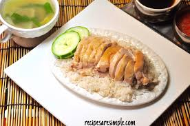

Hainanese Chicken Rice

Description:
Hainanese Chicken Rice is a beloved dish in Singapore and Malaysia, known for its fragrant rice, tender poached chicken, and flavorful sauces. The chicken is gently cooked to retain its juiciness, while the rice is prepared with chicken fat, garlic, and ginger for extra aroma. Served with chili sauce, ginger paste, and dark soy sauce, this dish is a staple in Southeast Asian cuisine.
Ingredients:
- 1 whole chicken (about 1.2kg)
- 1 tablespoon salt
- 4 slices ginger
- 4 cloves garlic
- 2 stalks spring onion
- 2 cups jasmine rice
- 2 tablespoons chicken fat or vegetable oil
- 2 cloves garlic (for rice)
- 2 slices ginger (for rice)
- Salt to taste
- Cucumber slices (for garnish)
- Fresh cilantro (for garnish)
Steps:
- Rub the chicken with salt to clean the skin, then rinse thoroughly.
- In a large pot, add water to cover the chicken, ginger, garlic, and spring onion. Bring to a boil, then lower to a gentle simmer. Poach the chicken for 40-50 minutes until cooked through.
- Remove the chicken and plunge into ice water to keep the meat tender. Reserve the poaching liquid as chicken stock.
- In a separate pot, heat chicken fat or oil. Sauté garlic and ginger until fragrant. Add rice and stir to coat.
- Add 2 cups of chicken stock and salt to the rice. Cook as usual until rice is fluffy and aromatic.
- Chop the chicken into serving pieces. Arrange on a plate with cucumber slices and cilantro.
- Serve the chicken with fragrant rice, a bowl of chicken broth, and sauces (chili, ginger, soy sauce) on the side.
- Enjoy your authentic Hainanese Chicken Rice!